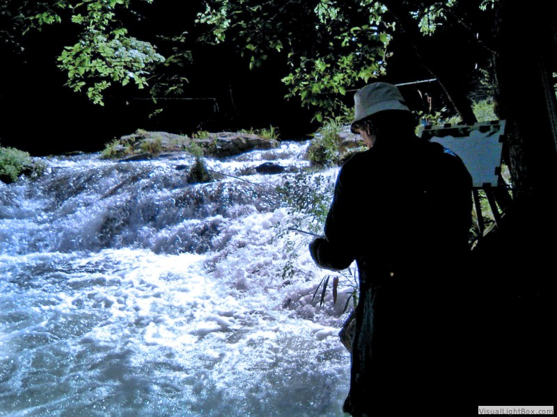
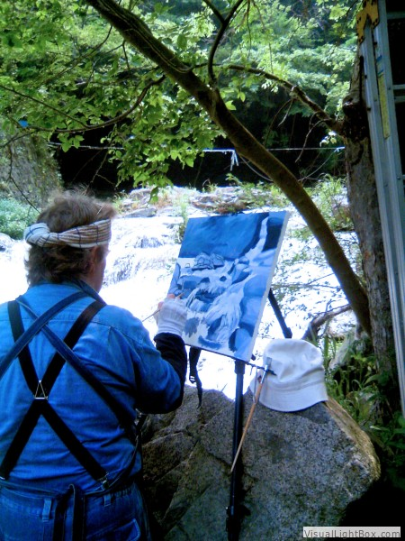
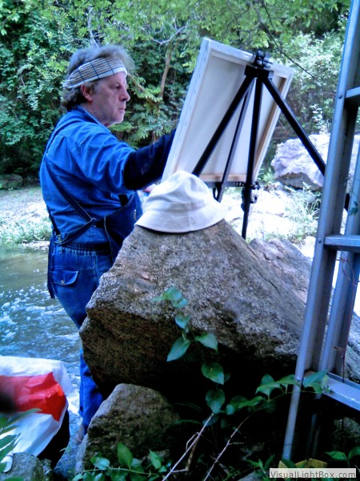

zichi Lorentz

Zichi Lorentz.
Visual Artist.Commentator-Publisher.
Liverpool UK (1952-1971).
London UK (1971-1994).
Japan (1994-).
Present location:Tatsuno City. Hyogo.
pdf Library for my Paintings and Exhibitions
Plein Aire Painting Notes
Some info on that
I didn’t write the beginning of this piece, and I can’t remember who did, but it is a great summing-up of what it means to paint outdoors—to practice the demanding and rewarding art of plein-air painting.
To those who do not practice the noble art of painting, the life of an artist may seem like one long pleasure. While that may be true in Hollywood movies, it is far from the reality experienced by the working artist. The inner life and struggles of an artist are rarely revealed except to those who are close to one.
Each time an artist stands before a blank white canvas, deep emotions rise to the surface—fear and doubt about one’s abilities, and the uncertainty of whether one will succeed in materializing the dream that exists in the mind, waiting to be released. It is almost like a child waiting to be born.
{kind=link}

Plein Air (click on image).
For a painting to become truly distinctive, the artist must imbue it with something of himself—his emotions, his vision, and his way of seeing. Otherwise, the artist is merely reproducing what nature already does far better. In the early stages of a painting, the artist is primarily concerned with his own limitations and possibilities, rather than with whether the public will like the finished work.
The true artist paints the subject that pleases him, and paints it in a way that satisfies his own vision—not according to what he thinks will please his audience. If the public is able to connect with the finished work, that is an additional reward and a sign that the painting has succeeded beyond the artist himself.
For the artist, there are many stages between the initial fear of the blank canvas and the moment when the finished painting is finally exhibited or sold. The artist is responsible for the design and construction of the painting, building it layer by layer. In my own case, this process often involves around fifty layers.
The artist must constantly analyse what is before his eyes and make decisions about design and technique. Just as important as deciding what to paint is deciding what to leave out.
{kind=link}

Plein Air (click on image).
The daily challenge is to develop one’s artistic style and technique. This often requires letting go of deeply ingrained habits—habits that may have served us well for many years. To give up something so familiar in exchange for something uncertain, with no guarantee of success, is a risk every artist must be willing to take. Otherwise, the work can become stale and repetitive.
Unfortunately, creative energy is not like a vast ocean that flows and ebbs predictably several times a day. There are periods of creative drought and artistic block. These periods are often best left to run their course while the artist turns his attention to the many other responsibilities that come with the life of an artist.
And when creativity returns, it often returns at a new and higher level of accomplishment.
Being an artist means never having enough time to paint as much as you would like. Most artists are essentially one-person operations, responsible not only for creating the work but also for marketing, advertising, framing, crating, and shipping their paintings. Then there is the paperwork that accompanies any business—bookkeeping, paying bills, filing taxes, and all the other administrative tasks that require the artist to exercise the other half of his brain.
And then there are the humorous—and sometimes frustrating—moments of plein-air painting, best described by Vincent van Gogh:
“Just try going outside and painting things on the spot! All sorts of things happen then.”
Van Gogh went on to describe having to pick flies from his canvases, dealing with dust and sand, and protecting paintings from branches while carrying them through the countryside. And, of course, there is the greatest challenge of all: the changing light. The effects one wants to capture are constantly changing as the day wears on.
{kind=link}

Plein Air (click on image).
I have experienced this many times myself. On numerous occasions, I have loaded my mountain bike with painting equipment and cycled 50 kilometres to reach a painting location that could not otherwise be reached by car.
There have also been times when I have spent two days climbing alpine mountains, carrying all my painting equipment with me, simply to reach a particular location. After all that effort, I might have only one afternoon in which to paint before beginning the descent.
From 1994 to 2002, I lived and worked in the Japanese Alps. It was always a struggle to reach the best painting locations, but the effort was invariably worth it.
So, is the life of an artist worth all the struggle?
Absolutely.
Nothing surpasses the gratification of knowing that, in some small way, you have contributed something to society.
You are not here merely to make a living. You are here in order to enable the world to live more abundantly,
with greater vision, with a finer spirit of hope and achievement. You are here to enrich the world,
and you impoverish yourself if you forget that errand.
—Woodrow Wilson